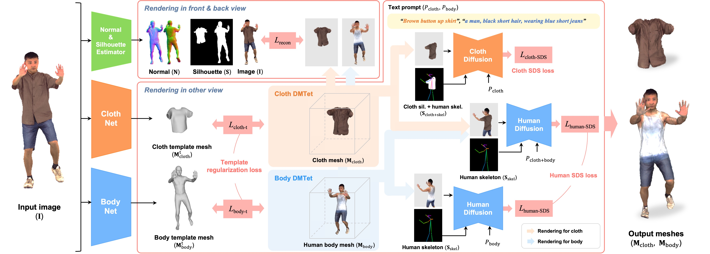

We propose DeClotH, which reconstructs both 3D cloth and human body from a single image.
Unlike recent 3D human reconstruction methods that consider cloth and human body as one unified object, we aim to reconstruct 3D cloth and human body, while being able to separate them. This is a much more challenging problem because cloth and human body are heavily occluded by each other, making it difficult to infer their overall geometry and texture. To address the occlusion issue, there are two core designs in our framework. First, to alleviate the occlusion issue, we leverage 3D template models of both cloth and human body as regularizations, which provide strong priors and prevent erroneous reconstruction by the occlusion. Second, we introduce a cloth diffusion model specifically designed to provide contextual information about cloth appearance, thereby enhancing the reconstruction of 3D cloth. Qualitative and quantitative experiments demonstrate that our proposed approach is highly effective in reconstructing both 3D cloth and the human body.
